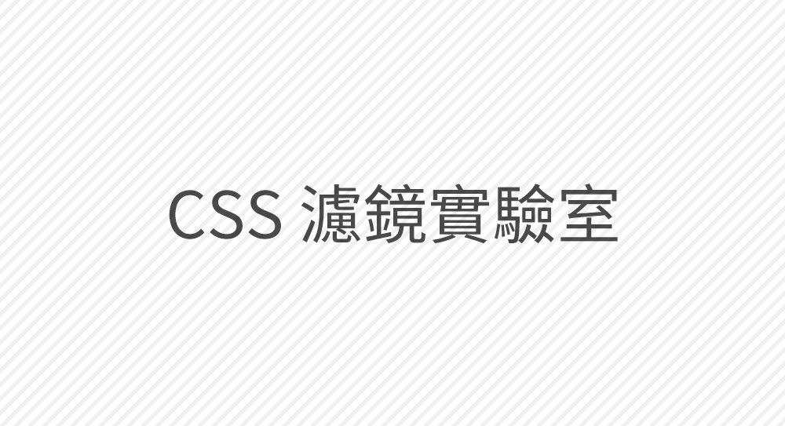

CSS 濾鏡實驗室
Powered by 洨洨安 CSS
預覽區
您可自行上傳圖片
上傳圖片
將圖片拖拉至此處進行上傳。

濾鏡
調整底下滑桿，來調整您的濾鏡
Grayscale
黑白
0%
100%
Sepia
懷舊
0%
100%
Saturate
飽和
0%
100%
Contrast
對比
0%
200%
Hue-rotate
色相旋轉
0deg
360deg
Invert
負片
0%
100%
Brightness
亮度
0%
100%
Blur
模糊
0px
10px
CSS
您的所調整的濾鏡 CSS
CSS
調整滑桿來產生 CSS
由
洨洨安 CSS
衍生出來的產物
GitHub